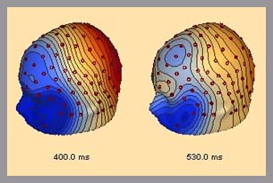
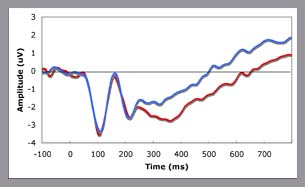

|
| StudiesCollaborationsPublications Training & Employment Equipment Tasks Grant Information |
|
Home About People Brochures Getting Here Contact Kids Corner
  |
Crowley, M.J., Wu, J., Crutcher, C., Bailey, C.A., Lejuez, W.C., Mayes, L.C. (2009). Risk-Taking and the Feedback Negativity Response to Loss Among At-risk Adolescents. Developmental Neuroscience. 31(1-2):137-48 PDF Mayes, L.C., Molfese, D.L., Key, A.P., Hunter, N.C. (2005). Event-related potentials in cocaine-exposed children during a Stroop task. Neurotoxicology and teratology. 27(6):797-813 PDF McPartland, J., Wu, J., Schultz, R. & Klin, A. (2009, May). Neural specialization for faces and letters in autism. Poster presented at the International Meeting for Autism Research, Chicago, IL. Shultz, S., Jones, W., Klin, A., & McPartland, J. (2009, May). Immediate Social Context in Face Processing: An ERP Study of Autism. Poster presented at the International Meeting for Autism Research, Chicago, IL. Crowley, J. M., Wu, J., Bailey, A. C. (2009 March). Avoidant Attachment, Social Exclusion and Re-entry into Fair Play. Paper Presented at the Society for Research in Child Development (SRCD), Denver, Colorado Landi, N., Worhunsky, P., Mencl, W.E., Erbe, J., Potenza, M.N., Irwin, J.R., Topf, J., & Mayes, L.C. (March, 2009). Functional Cortical Activation Associated with Processing of Infant Emotional State. Presented at the sixteenth annual meeting of the cognitive neuroscience society, San Francisco, CA Erbe, J., Landi, N., Irwin,J., Mencl, E., Topf,J., Potenza, M. & Mayes, L. (March, 2009). EEG Measures of Adult Response to Infant Emotion. Presented at the sixteenth annual meeting of the cognitive neuroscience society, San Francisco, CA |
  |